To design a platform that lets Mentees (Learners/Students)
connect with a Mentor of their choice so that they can
receive relevant guidance and knowledge and make the right
career decisions.
Project Context ✍🏻
1 Week
Solo Project
Design Challenge
My Role ️🤵
UX Research : Surveys, Interviews, Market
Research
UX Design
Visual Design
Tools Used 🛠🔎
Figma
Google Forms
Google Meet
Process
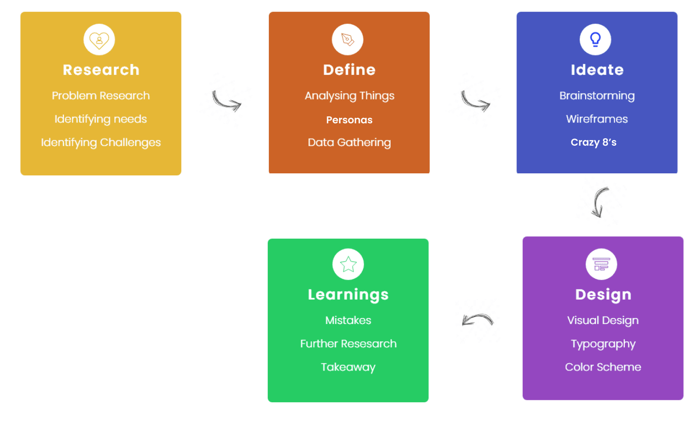
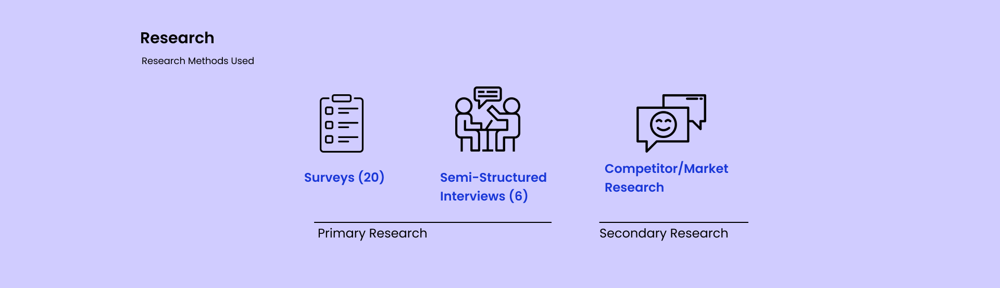
As initially for every project I ask few research questions
from myself to better understand the context. Here are some
questions I wanted to get answers by the end of this project
-
Why does mentorship matters?
Why do we need a mentor?
Why should a mentor guide you/invest time in someone?
From where do we find a mentor?
How could one believe in anyone’s advice?
How a mentee would get to know whether this mentor is
good for him/her or not?
Surveys — Now, after knowing few of things
I moved to conducting a survey , I
floated a Google form among my peers, in 1 day I got only
responses from around 20 students, unfortunately in this
those who fills the form are only mentees. As I don’t want
to wait much to get more responses, as it’s
timed challenge, so I focused more
on 1-1 interview, in which I
talked with 4 students who seek mentorship and 2 mentors who
want to provide mentorship.
Semi-Structured Interviews - Talking
directly with users give me much
more insights about what they want and what are their
pain points.
As I mentioned above my main focus was here to get more &
more insights as I didn’t get much value from the survey,
although I got to know about their needs through it. But
still, I want to know more about their pain points, as my
whole solution would based on that only.
Market Research - This is one of
interesting thing I like to do, I explore different
applications already existing in the market, also read and
analyze data from different sources to validate some of my
assumptions that I made. Doing secondary research provides
me some new information that sometimes misses in a 1-1
interview or surveys. Some of the market findings -
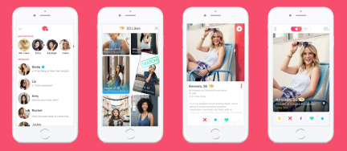
Tinder
Tinder is not exactly a competitor but, it helps in
providing some value how it helps its users to match
with each other without even knowing them, what’s
the motivation behind users that makes them use the
application.
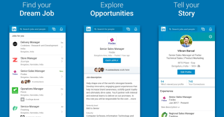
LinkedIn
LinkedIn is somewhat related to the context, but not
exactly, it’s main focus was not onto helping mentee
to find mentors, but users can request other people
to be their mentor, so I thought of understanding
its features and applications too.
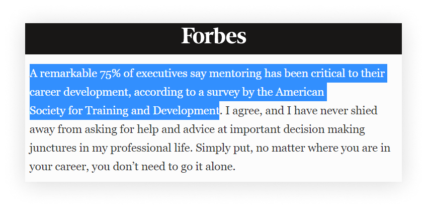
Shows how much important is mentorship :)
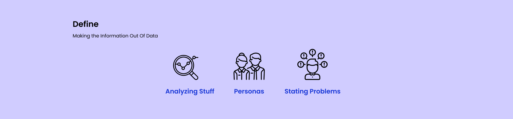
Now I got the data from the research but that data is not
categorized in a proper way to make the information. So, to
make the information out of data, I made personas and state
the problems that I understood from the research.
Some of the research insights that i found -
Following Up with each other after one call is
difficult, especially when you’re first time meeting the
mentor.
Mentorship should feel natural, it’s not like answering
one or two questions but it’s more about guiding the
mentee through the whole process.
Everyone specially mentee should value time of each &
everyone.
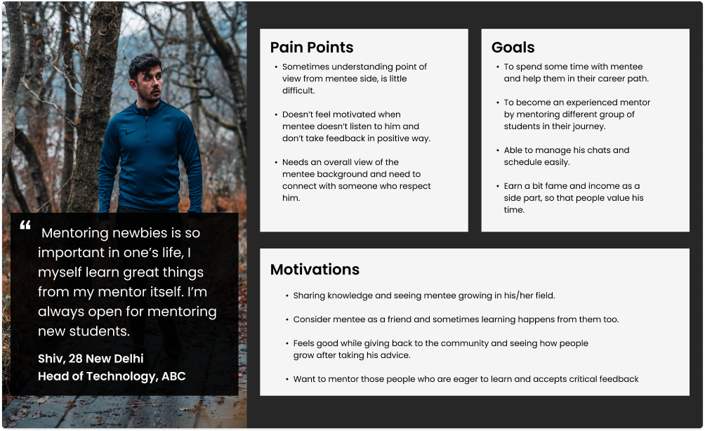
Mentor Persona
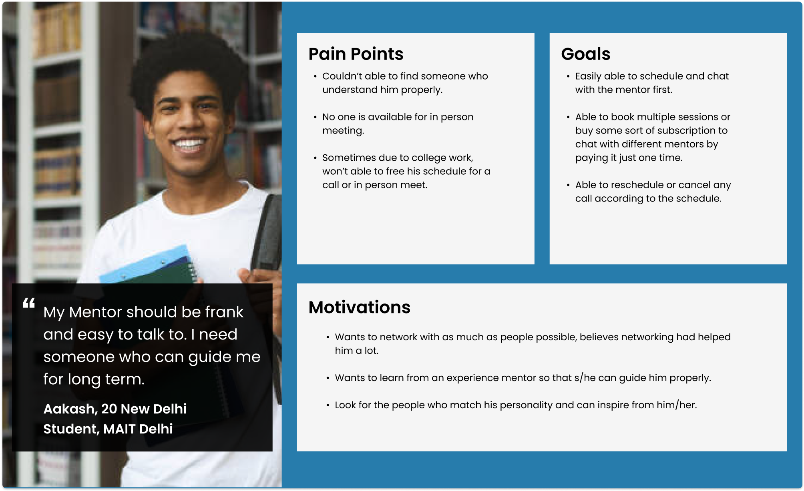
Mentee Persona
Problems from Mentors -
It’s hard to connect with someone having no common
value, interests and majors.
It’s little difficult to maintain work life and devoting
time to mentoring.
As of now there’s no common platform where mentees can
schedule meets and chat.
It’s hard to share things that are common to some
mentees, teaching same thing again on 1-1 is tedious.
Problems from Mentees -
Sometimes after choosing a mentor, there’s no way to go
back and cancel any meeting, in case mentee doesn’t like
the mentor.
Similarly as of now there’s no common platform where
user can seek mentorship from mentors.
If sometimes got a chance to get mentorship from mentor,
then time doesn’t match with each other schedule.
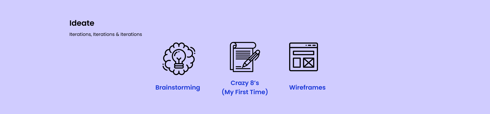
Here comes the most interesting and one of my favourite part
i.e. brainstorming, in this I try to generate as much as
ideas possible, and then choosing the best from it. In this
first time I perform the
Crazy8’s activity and it really
gives some interesting options to choose from.
I generally prefer
pen & paper for all of my
activities whether it’s making wireframes, user flow ,
architecture or anything, as it gives me ample space to make
mistakes and do better.
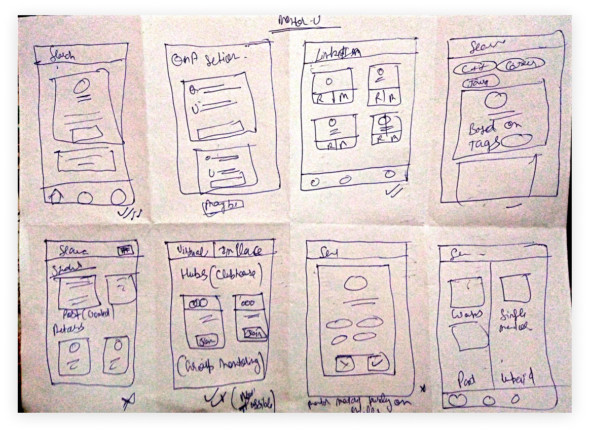
Here’s my Crazy 8’s sheet
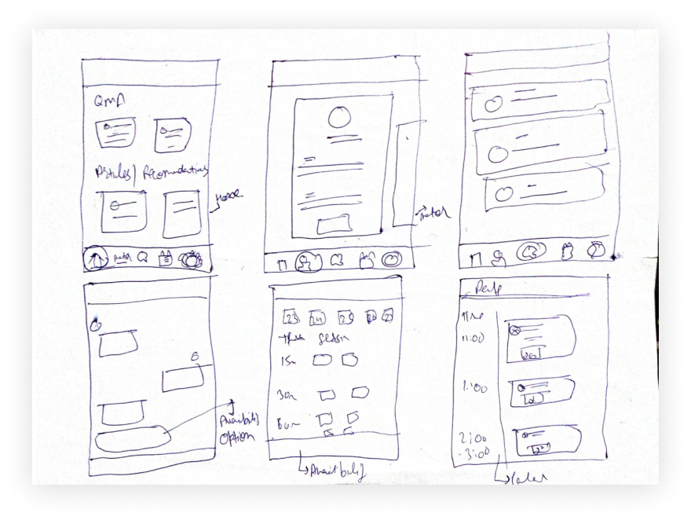
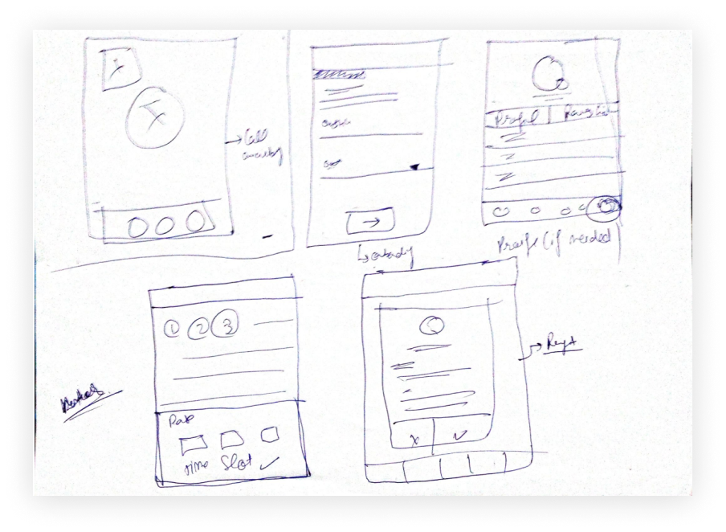
Few Screenshots of my wireframes
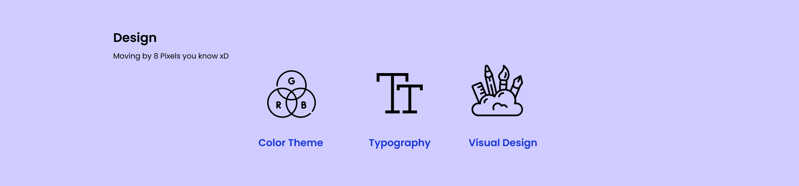
The very first thing is choosing the right color and then
the right typeface beause it’s the color and font that makes
or breaks the design, here I choose the shade of
blue as my primary color because
blue is something that denotes peace, security and makes
some order.
For Typeface I choose
“Inter” as Heading and “Nunito Sans” for body
copy
and other labels. Reason for choosing these typefaces is as
both are sans- serif and these works perfectly on small
screens and increase the legibility
006ADA
DA0034
4DC591
021028
677993
FFFFFF
Inter
For Heading
Nunito Sans
For Body Text, buttons and other labels
IMP - You can directly click on the video to listen to the
whole prototype rather than reading the whole text (Yes,
that’s my voice :p)
For Mentee -
Easy Onboarding with less effort
Here firstly I designed the splash screen for
the application and later on the onboarding
form, I try to make onboarding easy by
connecting the account via
linkedin as application can directly fecth
data from there.
While onboarding I divide the questions in three
formats, so that user
don’t feel confused by
seeing lot of questions.
(Problem Solved)
In the last I try to ask unformal questions as
with the help of AI,
we can recommend mentors according to the users
answers. (Making proper use of technology)
Learn from others and find the best mentor for
you
Here in the first screen, users can see popular
QnA’s and even see the answers or ask some
questions from their end too. The goal of home
screen is to
answer common questions
with in a QnA itself, as it would save mentor
time to answer the same things again & again.
(Problem Solved)
Again on home screen there could be several
other things too like
resources, articles and much more, it totally depends on the requirements. Or by
seeing the behavior of users, as of now I had
just shown the recommended mentors.
In next frame, a mentee can see mentor’s profile
and when user clicks on Send Request, it would
ask few questions, as it helps mentor in better
knowing and accepting their request.
Easily connect with mentors
First frame shows the Chat screen, a mentor
would directly
come into chat only if he accepted the
mentee request
and a mentee can check availability with the
mentor by simply asking them and therewould be
an option to
send availability button
from mentor side which he can send in the chat
screen itself, from where user can check his/her
availability.
(Problem Solved)
Second frame shows the
calendar, in which a
user can see his/her upcoming session
accordingly to the date, even user can
reschedule/cancel the session if s/he needs to
do that easily.
After clicking on check availability button user
can book a slot and see the charges for each
class (here the
assumption I’m taking
is every mentor would have same charge for
15/30/60 min calls), as for booking a pack of
sessions (as mentioned in the problem statement)
a user can directly buy a
subscription model as
now cost would be same for each mentor.
Buying that
subscription model
would help user in two ways, one is low cost,
other is mentorship is not something that can be
taught on 1 hour call, but it needs a constant
effort from both side, so booking multiple
session would help both mentors & mentees.
For Mentor -
Mentored the right mentees
For the mentor most of the screens would be same
or with some little change, here I want to show
the screens that are bit different and had some
importance in the application.
So, in the first frame a mentor can review
request of mentees s/he can either accept or
reject that, if he accepts then it would
directly send a message to mentee, if not then
mentor need to
give a review why s/he’s rejecting mentee’s
request.
In the second screen like a mentee, mentor can
also check his calendar, but there’s an option
there too to
set his availability,
as it would help mentees in knowing when mentor
is available.
(Problem Solved)
Last screen shows how he can schedule his time
according to his availability in a easy way.
Phew, after a continuous hard work, I learn some beautiful
things and understand few things that may be improved -
One of the learning is while conducting surveys if it
doesn’t give you adequate data
then focus on 1-1 interviews,
as they could prove to be very useful and help you in
getting some better insights.
Don’t rush for the solution,
first properly understand the problem
& concept.
Now, few things I could do more better if I had more
time is creating more iterations (at least 2-3) to
better solve the problem, may be conducting a
test with prototype too and
see whether user can easily able to perform the tasks or
not.
I could design few screens for
some other use cases too for
ex - how’s the screen look when mentee try to give
review to the mentor or how a mentor can check his
reviews or how the call screen would look or from where
do user can access the recordings of the sessionif I had
more time. (These could be accomodated in
Settings/Profile section)
I found Crazy 8’s to be useful
especially when you need to generate more ideas in a
shorter span of time.